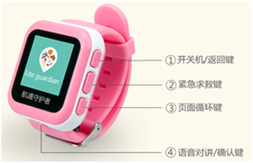

PT-720兒童智能手錶使用手冊
封面

①.開關機/返回鍵：長按開機/關機 ，短按返回主界面
②.緊急求救SOS鍵：單擊進入SOS界面，進入SOS界面後，長按SOS鍵撥打求救電話
③.頁面循環按鍵
④.確認鍵
綁定兒童手錶
1、請使用中國移動或中國聯通標準Nano-SIM卡。卸下後蓋上的螺絲，放入Nano-SIM卡，正確安裝完成後，長按開關機鍵開機。如果沒有安裝SIM卡，手錶會在開機1分鐘後自動關閉。
2、登錄航通守護者APP，點擊添加新設備按鈕，選擇綁定PT720（兒童智能手錶）設備。
3、在手錶綁定界面輸入手錶內的SIM卡號，點擊"確認"發送註冊驗證短信到手錶，短信發送成功後，手錶上會顯示綁定二維碼。
4、APP掃描手錶上顯示的二維碼，完成手錶綁定。
5、點擊手錶"確認"鍵退出二維碼界面；驗證成功後自動完成追踪器的綁定。
功能介紹
1、運動記錄：在主界麵點擊開關機鍵，可以查看寶貝當日運動狀況。
2、SOS功能：在主界麵點擊SOS按鍵，進入SOS界面，常按SOS鍵，手錶撥打求救電話給緊急聯繫人，並發送求助短信給電話本前3位聯繫人，以便快速獲得援助。
3、在主界麵點擊"頁面循環鍵"，切換後，可以進入不同功能項。
4、通訊錄功能：在手機APP添加聯繫人，保存後，手錶通訊錄會自動同步更新。
5、通話功能：進入通訊錄功能中，點擊"頁面循環循鍵"選擇聯繫人，點擊"確認鍵"，電話播出，便可雙向通話，點擊開關機鍵，掛斷電話。
6、語言設置功能：在語言設置功能項中，點擊"頁面循環循鍵"選擇語言後，點擊"確認鍵"保存。
充電介紹
設備支持主流手機適配器，為環保考慮，所以未配置電源適配器。請選擇合適的適配器給設備充電即可。
配件
1.充電線；
2.使用說明書
3.螺絲刀
常見問題
1.為什麼無法開機？
答：可能由於電池耗盡導致，請連接充電器充電後再開機。
2.為什麼綁定設備失敗？
答：綁定設備需要在網絡信號良好的情況下進行，請確保網絡信號良好。
3.為什麼定位不成功？
答：設備需要在空曠的位置方可準確定位，請檢查所處的環境；建議首次定位在室外空曠位置進行。
4.為什麼未配置電源適配器
答：設備支持主流手機適配器，為環保考慮，所以未配置電源適配器。
注意事項
1、請不要將產品浸泡在水中；
2、請將產品遠離火源、高溫高熱等極端環境；
3、本產品在斷電狀態和無網絡服務時，定位功能無法工作。
售後服務
請諮詢當地的業務人員或者我司售後服務中心。
聯繫我們
有任何問題或建議，歡迎您隨時聯繫我們。
中國大陸
官方微信：航通守護者
客服QQ:3106893070
服務熱線：0755-8601 8738
中國香港
服務熱線：+852-26273380
郵箱：cs-liteguardian@castelbeidou.com
海外
郵箱: sales@castelbds.com
公司網頁:www.lite-guardian.com
服務熱線:+8675586018742